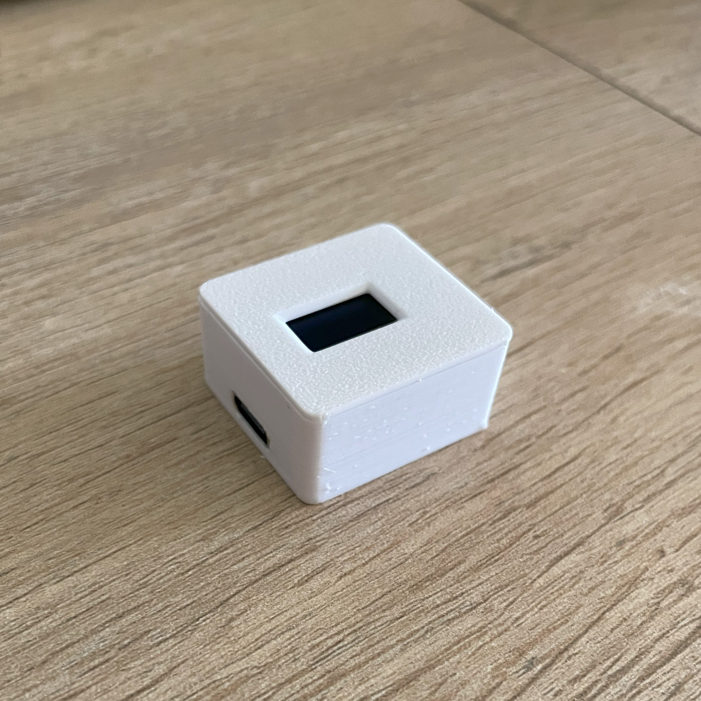

To use JellyBean android app, you need to own a JellyBean module
How to use it
- Plug the JellyBean module
- On your phone, connect to the JellyBean_Hotspot WiFi
- Open the JellyBean app, and enter your WiFi credentials
- Wait for the JellyBean module to reboot
- Once done, look at the JellyBean module IP address and save it to the JellyBean app
- That's it, enjoy JellyBean
JellyBean hotspot
If there is no configuration, the JellyBean module will create a hotspot
SSID -> JellyBean_Hotspot
WPA -> jellybean
Layout
In the settings, you can change the keyboard layout between :
- US_us (QWERTY)
- FR_fr (AZERTY)
The JellyBean module have to restart to take the changes
Erase
Be carefull, erasing the configuration from JellyBean app will erase the app configuration AND the JellyBean module configuration
The app
On the main view, no keyboard is needed.
In the "Your command" field, you will see the keystrokes
Just below you will see precisely the commands you are about to send
Keys table
Here you find the key table
| Functions | Keys |
|---|---|
| 1-9 | 1-9 |
| Full | F |
| At | A |
| Out | O |
| Thru | T |
| And | + |
| Except | - |
| Next | . (dot) |
| Last | , (comma) |
| Clear | C |
| Enter | Send button |
The delete button is used to clear the "Your command" field
JellyBean module
The JellyBean module is only 28.8*26.7*14.7 (l*w*h - in millimeters)

It sends keystrokes received via WiFi
Contact
To order one, please send an email
Disclaimer
I am not responsible for anything. You use JellyBean at your own risk.